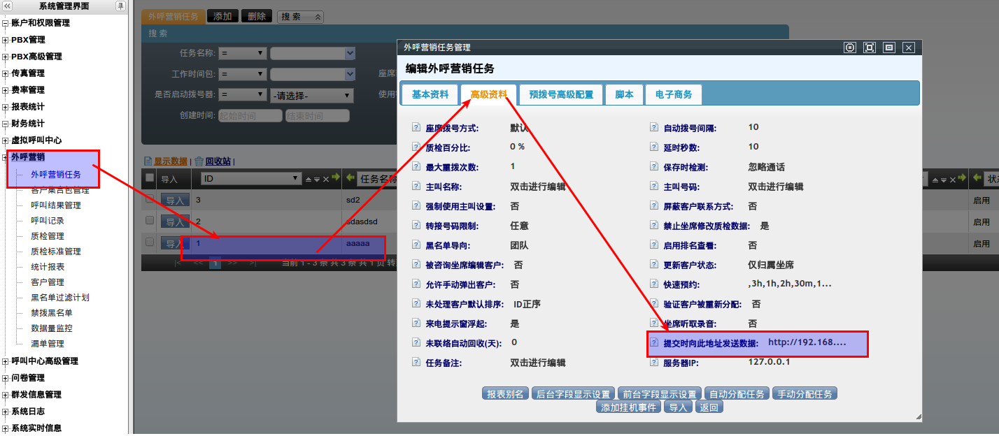

API y AMI¶
Qué es¶
AsterCC expone una API HTTP simple (endpoint asterccinterfaces) para que sistemas de terceros disparen acciones — originar una llamada, enviar correo/SMS, o buscar una dirección en el mapa — pasando parámetros por query string. Por debajo, AsterCC usa el Asterisk AMI para ejecutar las acciones de telefonía.
Puede estar desactualizado
Esta referencia proviene de la guía de desarrollo original (v2.0, ~2018). Antes de integrar en producción, valida contra el manual de API vigente de tu versión de AsterCC — la lista de acciones puede haber cambiado.
Cómo se usa¶
Parámetros comunes a toda acción¶
| Parámetro | Qué es |
|---|---|
EVENT |
Nombre de la acción a ejecutar (obligatorio) |
FROM |
Origen del número: Campaign (tarea de campaña) o Virtualcustomer (usuario virtual / oficina virtual) |
FROM_ID |
ID de esa tarea o usuario virtual |
AN |
Número de agente que origina la solicitud |
APW |
Contraseña de ese agente |
AGENT_GROUP_ID |
ID del grupo de agentes del solicitante (requerido en algunas acciones) |
Acciones disponibles¶
EVENT |
Qué hace | Parámetro adicional |
|---|---|---|
DIAL_OUT |
Origina una llamada saliente | TARGET (número destino) |
EMAIL_SMS |
Abre la interfaz de envío de correo/SMS | — |
GMAP |
Busca una dirección en el mapa | ADDRESS |
Ejemplo — originar llamada¶
<iframe
src="http://<servidor>/asterccinterfaces?EVENT=DIAL_OUT&TARGET=041139735857&AGENT_GROUP_ID=10&FROM=Virtualcustomer&FROM_ID=27&AN=9000&APW=9000"
style="display:none;">
</iframe>
El patrón general es: un botón o evento en el sistema externo inyecta un <iframe> oculto apuntando a esta URL con los parámetros correspondientes; el iframe dispara la acción del lado de AsterCC.
Ejemplo — enviar correo/SMS¶
EVENT=EMAIL_SMS&FROM=Campaign&FROM_ID=8&AN=admin&APW=123456
Ejemplo — buscar en el mapa¶
EVENT=GMAP&ADDRESS=Dalian&FROM=Virtualcustomer&FROM_ID=11&AN=2000&APW=2000
AMI (nivel más bajo)¶
Para integraciones que necesitan eventos de telefonía en tiempo real (no solo disparar acciones), la vía es conectarse directamente al Asterisk AMI — requiere una cuenta con los permisos read/write adecuados, ya documentados en esa página.
Importar datos a una campaña o al predial (importWS)¶
Interfaz para cargar clientes por API directamente al paquete de clientes de una tarea de campaña y, opcionalmente, a la lista de marcación predictiva.
importWS(orgidentity, usertype, user, pwdtype, password, modeltype, model_id,
source, context, source_user, source_pwd, exetime, delrow,
phone_field, priority_field, dialtime_field, emptyagent,
resetstatus, dupway, dupdiallist, changepackage)
Parámetros más relevantes:
| Parámetro | Qué define |
|---|---|
orgidentity |
Identificador único del equipo |
usertype / user / pwdtype / password |
Credenciales — usertype es agent o account; pwdtype es plaintext o md5 |
modeltype / model_id |
Tipo de módulo (Campaign) e ID de la tarea |
source |
Origen de los datos: data (un registro inmediato, formato campo1=valor1\|\|campo2=valor2), http o ftp (archivo CSV remoto) |
context |
El dato en sí, o la URL del archivo, según source |
delrow |
Cuántas filas iniciales del CSV ignorar (típicamente 1, para saltar el encabezado) |
phone_field / priority_field / dialtime_field |
Si se quiere que los datos entren también al predial: qué campo es el teléfono, la prioridad, y la hora de marcado |
dupway |
Qué hacer si el cliente ya existe: ignoreDuplicate, all, o ignoreSuccess |
changepackage |
Si el paquete usa la tabla general y el cliente ya pertenece a otro paquete: skip, unassignToCurrent, reassignToCurrent |
Respuesta: string con formato |Retuen|<código>|Retuen|<mensaje> — código 1 es éxito (con el ID de la tarea de importación si la fuente fue http/ftp), código 2 es error.
Warning
Todos los parámetros son obligatorios — los que no apliquen deben enviarse como cadena vacía, no omitirse.
Recibir datos al guardar una llamada de campaña (webhook saliente)¶
En la tarea de campaña, el campo "enviar datos a esta dirección al enviar" (pestaña avanzada) activa un POST automático hacia un sistema externo cada vez que un agente guarda una gestión — útil para sincronizar el resultado de la llamada con un CRM propio.

$.ajax({
type: 'POST',
url: '<url configurada>',
dataType: 'json',
data: /* campos de la gestión + ficha del cliente */
});
Campos enviados incluyen, entre otros: campaignId, customerId, callresult, memo, status (open/pending/errorclosed/sucessclosed), workorder_id, diallogid, agent_group_id, y los campos de la ficha del cliente (customername, phone1, email, etc. — varían según los campos personalizados activos).
El endpoint receptor debe:
1. Permitir CORS para el POST entrante.
2. Devolver una respuesta JSON (ej. {"code": 1, "msg": "success"}) para evitar que la plataforma del agente muestre un error de red.
Referencia rápida¶
| Necesito | Usar |
|---|---|
| Originar una llamada desde un sistema externo | API HTTP → EVENT=DIAL_OUT |
| Recibir eventos de llamada en tiempo real | Conexión directa a AMI |
| Enviar correo/SMS desde un botón externo | API HTTP → EVENT=EMAIL_SMS |
| Cargar clientes a una campaña por API | importWS |
| Sincronizar resultados de llamada hacia mi CRM | Webhook de "enviar datos a esta dirección al enviar" en la tarea |
Fuentes¶
raw/zh/二次开发者指南/方法.txtraw/zh/二次开发者指南/如何通过api将数据导入到外呼营销任务及预拨号.txtraw/zh/二次开发者指南/外呼营销弹屏页面保存时如何向远程系统发送数据.txt